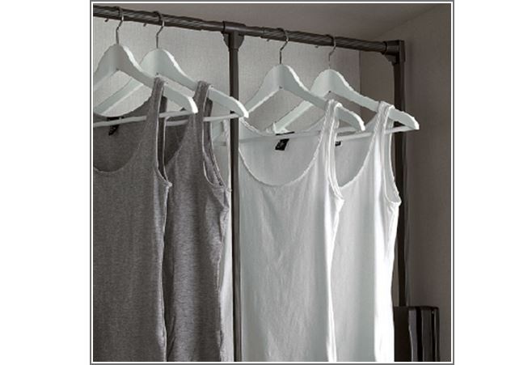
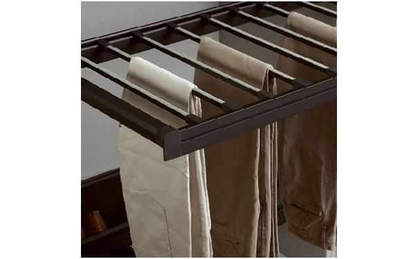
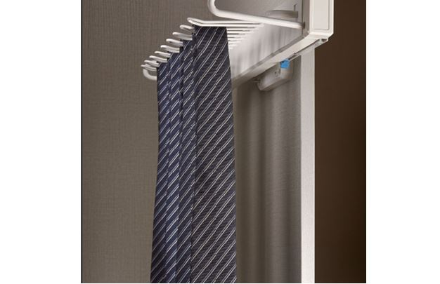
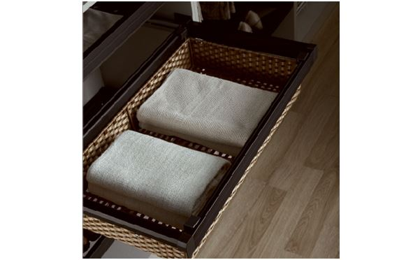
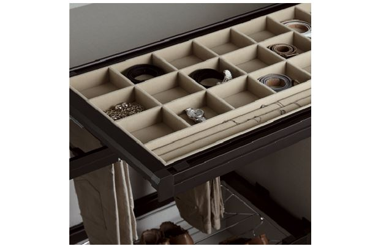

28
April
Sliding Wardrobe Design: Perfect for a Small Bedroom
Limited storage space is one of the major concerns when it comes to a small bedroom. A bedroom with sufficient storage space along with a fabulous design is everyone’s desire. A proper wardrobe design will efficiently solve all your space and storage-related issues.
To make it simpler, we introduce our exclusive range of Sliding Wardrobe designs (also commonly known as Sliding Wardrobes) for convenient storage. Let’s find out more about the sliding wardrobes and understand why they are perfect for a small bedroom.
What is Sliding Wardrobe Design?
In these kinds of wardrobes, the hinged doors are replaced with sliding doors. The open mechanism of common hinged wardrobes occupies more space which makes them unsuitable for small-sized bedrooms. Sliding wardrobes require less space for opening and closing the doors.
Why Sliding Wardrobe Design?
In Sliding Wardrobes, the doors slide in one section when opened and the only area covered is of the wardrobe itself. Here, the space required to open the door is the same as when it is closed.
Whereas, in the hinged wardrobes, when we open the doors it occupies approximately 2 feet area which is a general problem in a small bedroom. So, sliding wardrobes are the best as they optimize space and are very convenient for smaller bedrooms.
Modern accessories & designs available in Sliding Wardrobes:
Sliding Wardrobes are modular wardrobes which are designed to provide maximum storage space along with modern accessories. They come in different colours and finishes too.
Modern Wardrobe Design & Accessories:
1. Clothes lift –
Modern accessories catch attention in modular wardrobes. The clothes lift gives easy access to the clothes hanged on it.

2. Coloured glass –
The doors can be made with textured and colourful glass. This is an elegant way to design the doors for your sliding wardrobes.
3. Pull-out rails and racks –
Sliding Wardrobe design have astonishing accessories such as the tie pull-out tray, shoe pull-out, trouser pull-out and much more, which offer excellent storage facility.

4. Side Mounted Tie Rack –
Basket Box for organized storage. For the proper arrangement of clothes and other accessories, we have the Semi-Open Storage Box for you.
The Side Mounted Tie Rack is perfect for storing ties. It’s moveable and can be pulled out for picking the tie that best suits the occasion.

5. Semi Open Storage Box –
Basket Box for organized storage. For the proper arrangement of clothes and other accessories, we have the Semi-Open Storage Box for you.

6. Multifunctional Storage Box –
Storing and finding the small accessories like watches, jewellery, belts etc. is so convenient with our Multifunctional Storage Box and its stylish too.

7. Internal lighting –
Modular wardrobes come with internal lighting, which adds a decorative element to it and also makes it easier for you to pick out your clothes.
Benefits of Sliding Wardrobe Design:
After seeing these magnificent modern modular wardrobe accessories you are now aware of the advantages of having a Sliding Wardrobe Design. There is no mess in the room giving you space to breathe, just perfect for small bedrooms.
I am now listing the benefits of Sliding Wardrobes so you are sure why it’s the right choice for a small bedroom.
Saving Space – When space is an issue, then sliding doors are the solution. The doors do not open outwards, they slide sideways which saves the space.
Extra Storage – Sliding door wardrobes are a perfect storage solution for providing a great storage space for your clothes, shoes, documents and much more. Wardrobe accessories such as drawers, hanging rails, shoe rack, multifunctional storage box and shelves are being used to design the internal storage structure of the wardrobe.